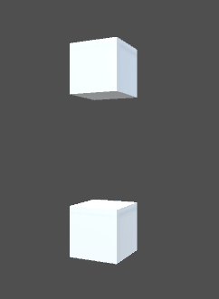

Class Ease
A serializable class for simplifying easing/tweening workflow
Inheritance
Implements
Namespace: Atlas
Assembly: Assembly-CSharp.dll
Syntax
[Serializable]
public sealed class Ease : ISerializationCallbackReceiverExamples

using UnityEngine;
namespace Atlas.Examples
{
public sealed class Example_Ease : MonoBehaviour
{
[SerializeField] private Vector3 m_initialRotation;
[SerializeField] private Vector3 m_finalRotation;
[SerializeField] private Ease m_ease;
private void Update()
{
// get normalized time on [0, 1], wrapping every 2 seconds
float t = ( Time.time % 2f ) / 2f;
// ease between rotations
transform.rotation = m_ease.Interpolate( Quaternion.Euler( m_initialRotation ),
Quaternion.Euler( m_finalRotation ),
t );
}
}
}
Properties
| Improve this Doc View SourceType
Type of ease function to use when evaluating
Declaration
public EaseType Type { get; set; }Property Value
| Type | Description |
|---|---|
| EaseType |
Methods
| Improve this Doc View SourceEvaluate(Single, Single)
Calculates the eased value of t
Declaration
public float Evaluate(float t, float duration = 1F)Parameters
| Type | Name | Description |
|---|---|---|
| System.Single | t | The time value to evaluate at |
| System.Single | duration | The duration of this ease |
Returns
| Type | Description |
|---|---|
| System.Single | The eased value |
Interpolate(Single, Single, Single)
Eases between the two given float values at time t
Declaration
public float Interpolate(float from, float to, float t)Parameters
| Type | Name | Description |
|---|---|---|
| System.Single | from | Initial value |
| System.Single | to | Final value |
| System.Single | t | The time value to evaluate at, normalized to [0, 1] |
Returns
| Type | Description |
|---|---|
| System.Single | The eased value |
Interpolate(Quaternion, Quaternion, Single)
Eases between two given UnityEngine.Quaternion values at time t
Declaration
public Quaternion Interpolate(Quaternion from, Quaternion to, float t)Parameters
| Type | Name | Description |
|---|---|---|
| UnityEngine.Quaternion | from | Initial value |
| UnityEngine.Quaternion | to | Final value |
| System.Single | t | The time value to evaluate at, normalized to [0, 1] |
Returns
| Type | Description |
|---|---|
| UnityEngine.Quaternion | The eased value |
Interpolate(Vector2, Vector2, Single)
Eases between two given UnityEngine.Vector2 values at time t
Declaration
public Vector2 Interpolate(Vector2 from, Vector2 to, float t)Parameters
| Type | Name | Description |
|---|---|---|
| UnityEngine.Vector2 | from | Initial value |
| UnityEngine.Vector2 | to | Final value |
| System.Single | t | The time value to evaluate at, normalized to [0, 1] |
Returns
| Type | Description |
|---|---|
| UnityEngine.Vector2 | The eased value |
Interpolate(Vector3, Vector3, Single)
Eases between two given UnityEngine.Vector3 values at time t
Declaration
public Vector3 Interpolate(Vector3 from, Vector3 to, float t)Parameters
| Type | Name | Description |
|---|---|---|
| UnityEngine.Vector3 | from | Initial value |
| UnityEngine.Vector3 | to | Final value |
| System.Single | t | The time value to evaluate at, normalized to [0, 1] |
Returns
| Type | Description |
|---|---|
| UnityEngine.Vector3 | The eased value |
OnAfterDeserialize()
Declaration
public void OnAfterDeserialize()OnBeforeSerialize()
Declaration
public void OnBeforeSerialize()